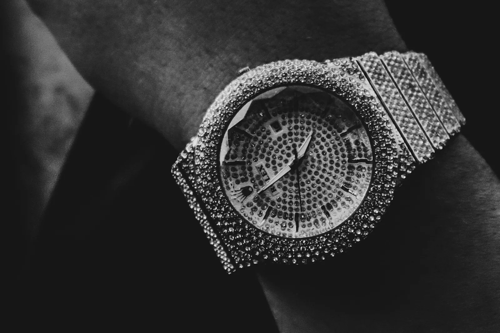
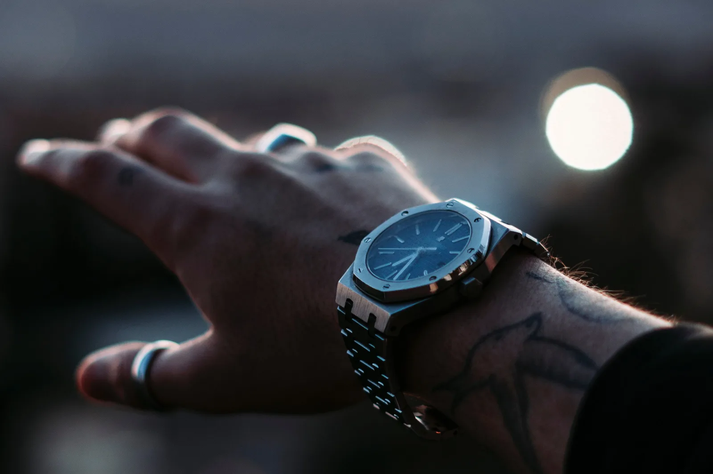
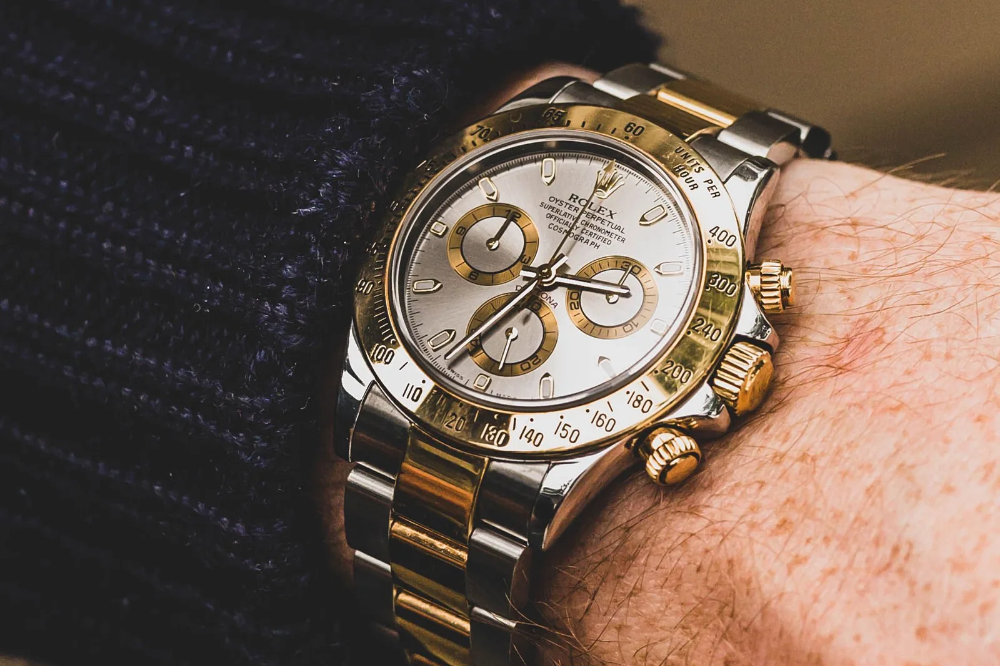
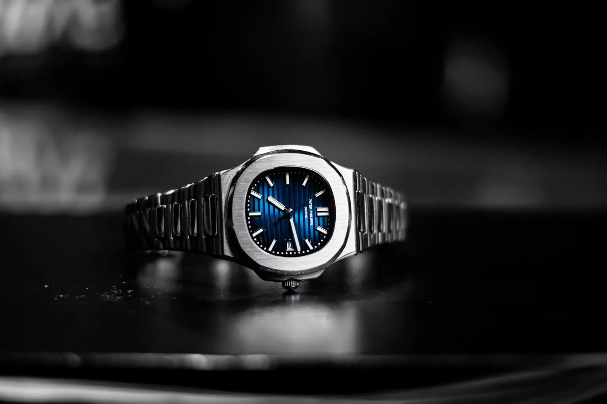

Somewhere between the group stage and the quarter-finals, this World Cup quietly became the best-dressed wrist show on earth. Cristiano Ronaldo turned up in a fully diamond-set Patek Philippe worth around $722,000. Drake watched from a suite behind a Richard Mille north of $1.3 million. Every watch magazine on the internet ran the same piece about it — gawk at the watch, quote the number, move on. Nobody told you what any of it actually means, or what you could own instead. That is the piece we are here to write.
Because here is the thing the seller mags leave out: you are not, in the end, admiring a pile of diamonds. You are admiring a taste — and taste, unlike diamonds, is buyable. Almost every wrist that matters at this tournament traces back to a handful of steel references you can price, and source, right now. So we will do the fun part first — the flexes you will never own — and then the useful part nobody else bothers with: the version of that taste you actually can.
Part One — The Flexes You'll Never Own
These are the marquee acts: watches that stopped being about telling the time somewhere around the second row of diamonds. Admire them. Screenshot them. Just don't go looking for them — most were never meant to be found, and a couple genuinely cannot be. We're not linking these to the Watch Finder, because that would be dishonest. They're spectacle, and spectacle is the point.
Portugal · The Diamond Flex
Cristiano Ronaldo
Patek Philippe — Haute Joaillerie, fully diamond-set
≈ $722,000
The most expensive wrist at the tournament, and the least relevant to yours. This is Patek's jewellery department, not its watchmaking one — a piece that exists to be photographed, gasped at, and never questioned on value. There is no honest "alternative" to a fully-set Haute Joaillerie Patek, and pretending otherwise would insult you. Admire it and keep scrolling.
Seen on his Instagram · @cristiano →The Stands · The $1.3M Suite Watch
Drake
Richard Mille — sapphire/tourbillon, collector-tier
≈ $1,300,000
Richard Mille is the watch world's supercar: featherweight, ferociously complicated, and priced like a house. Drake owns several; the one that made the round-ups is the kind that never touches a display case. It is the purest "if you have to ask" object in the building — and, tellingly, the one reference here with almost no relationship to the watches the actual footballers wear.
Seen on his Instagram · @champagnepapi →The Stands · The Connoisseur's Flex
Jay-Z
Audemars Piguet — tantalum & platinum Royal Oak
Six figures · rarely for sale
The quiet monster of the group. No diamonds, no noise — just an exotic-metal Royal Oak that only people deep in the hobby will even clock. This is the flex that says I don't need you to know. It's also the bridge to Part Two: strip the tantalum, keep the Royal Oak, and you land on a watch that is very much within reach.
The Stands · The Custom Flex
Travis Scott
Custom — "Cactus Jack" one-off
Priceless / not for sale
A personalised, branded one-off is the modern celebrity endgame: a watch that literally cannot be bought because only one exists and it has your logo on it. Interesting as culture, useless as a shopping list. We note it and move on — which is more than we can do for the pieces in Part Two.
Editorial · France
Kylian Mbappé — the outlier
Mbappé wears Hublot, as an ambassador. We're flagging it deliberately and not pointing you anywhere: Hublot sits outside the collector-value conversation this piece is about — it's a marketing relationship, not a reference the secondary market chases. Included for honesty, because a "what they wore" piece that quietly drops the biggest name would be the dishonest kind. There's no useful alternative to route here, so we won't invent one.
No Watch Finder link by design — off-positioning for this argument. If you want the collector's-taste version of a French icon's wrist, it isn't Hublot; it's the steel sports watch in Part Two.Part Two — What You Can Actually Own
Now the part every other roundup skips. Look past the celebrities in the suites and watch the players instead — the ones who actually collect. Vinícius Júnior wears a steel Audemars Piguet Royal Oak. Erling Haaland's rotation runs on Rolex Daytonas and a Patek Nautilus. Martin Ødegaard captains Norway in a single Rolex GMT-Master. Notice what's missing: diamonds. The taste that actually holds value at this tournament is steel — and steel is exactly the thing you can price and source.
So here is the honest translation. You can't buy Ronaldo's diamonds or Drake's million-dollar Mille. But the taste underneath the whole show — the sports watch on a steel bracelet — resolves to four references that trade every single day. Check what each is really worth with Fair Value, then find one from a source worth trusting.

Audemars Piguet
Royal Oak Selfwinding — steel, 41mm / 37mm
Gérald Genta's 1972 design and still the most influential luxury sports watch ever made. This is the honest version of both Vinícius's wrist and Jay-Z's — the same silhouette, minus the diamonds and the tantalum. The steel Royal Oak is the taste, unadorned.

Rolex
Daytona · Submariner · GMT-Master II — steel
Haaland's Daytonas and Ødegaard's GMT are the blueprint. The steel Rolex sports trio is the most liquid grail money in the world — always in demand, always trading, and genuinely attainable next to a diamond Patek. Start with what one truly costs, not the hype price.

Patek Philippe
Nautilus — steel, integrated bracelet
The watch in Haaland's box that a real collector would chase hardest. The discontinued 5711 is the trophy; the current references are the reachable route in. This is where Fair Value earns its keep — the gap between the asking price and the honest one is widest here.
You can't buy Ronaldo's diamonds. You can buy the watch underneath them — for a fraction, from someone worth trusting.
The Stories To Watch verdictThe Honest Takeaway
Roundups treat these watches as the finish line — a price tag to be impressed by. We treat them as the starting line. The diamond Pateks and million-dollar Milles are the lure; the point is the steel underneath, and the fact that you can actually own it. Every wrist worth wanting at this World Cup traces back to a Royal Oak, a Rolex or a Nautilus — priced honestly, and out there to be found.
So enjoy the final on Sunday. Then, if one of these is the watch you've quietly wanted since the group stage, do the two useful things no seller's roundup will ever tell you to do: find out what it's really worth, and find one from a source you can trust.
The Two-Step
Price it with Fair Value, then find it in the Watch Finder
Retail vs. real market · Authorised dealers · Grey market · Auction houses